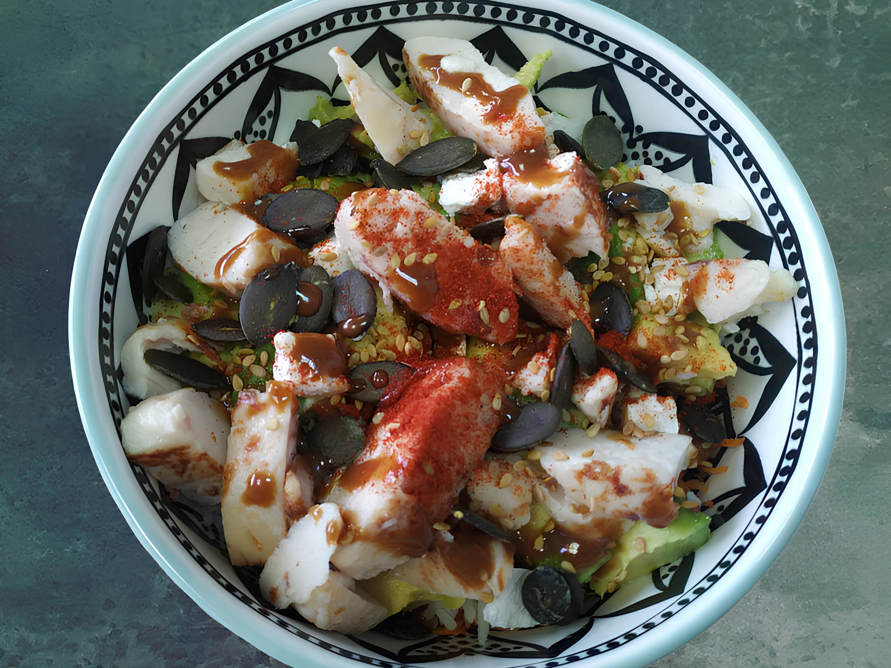

Poké
 Pierre
Pierre
Mars 2025
Moyennant un peu de logistique, et quelques minutes de préparation la veille, ce poké est parfait pour la pause du midi au travail. Pour le poulet j'utilise les aiguillettes de poulet rôti Fleury Michon (2x75g), faciles à transporter et à conserver. Quant à la feta, une fois ouverte elle peut tenir plusieurs semaines dans une saumure réfrigérée.

- Temps de préparation 5 min (+10 min de cuisson)
- Nombre de convives 1 personne
Ingrédients
Valeurs nutritionnelles
- Calories 819 kcal
- Glucides 67 g
- Protéines 53 g
- Lipides 39 g
- Sucres 13 g
Instructions
- 1 La veille : cuire en parallèle les oeufs (10 minutes) et le riz (10 à 15 minutes, compter trois volume d'eau pour un volume de riz). Préparez les carottes râpées pendant que ça cuit.
- 2 Préparation du poké : commencer par une couche de feuilles d'épinards.
- 3 Pour la deuxième couche, on met les carottes râpées.
- 4 On termine le poké avec le riz réchauffé 1 minute au micro-ondes, puis le reste des ingrédients par dessus. Ne pas oublier le paprika.
- 5 Bonus gourmand (à éviter si on veut être 100% sain) : dans un petit bol, on mélange 5ml de sauce soja salée, 5ml de sweet chili, et 5ml de sriracha mayo puis on verse la sauce obtenue sur le poké.